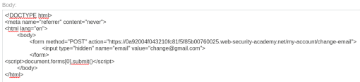

CSRF where Referer validation depends on header being prese
- Provided with blog website, credentials “wiener:peter”, told to change the viewer' email.
- Logged in with provided credentials
- Intecepted update email request using burpsuite
- Pasted request into csrfshark.github.io/app
- Modified request to function properly and pasted into body section of provided exploit server
- Tried viewing exploit and got Invalid referer header error
- Added meta tag to not modify referer header:

- Delivered to victim and completed lab successfully: